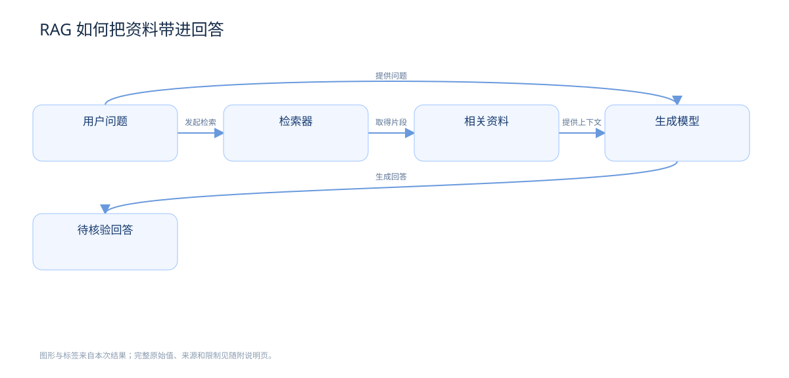

RAG 把检索和生成结合起来。
检索器取得相关资料。
生成模型使用资料与问题生成回答。
最后，对照依据核验回答。
OUTPUT PRESENTATION · CONTENT DEMO
同一个主题，
四种讲解方式。
以“RAG 如何把资料带进回答”为例，阅读短句、查看关系图、探索交互页面，或观看带旁白的视频。
01 · 用短句讲明白
保留术语、来源和适用限制；文字产物附有完整的原始结果。
02 · 让关系可见


03 · 点击、搜索、核验
点击图中的“检索器”，查看它的输入与输出；切换到“核验依据”，检查来源和限制。
04 · 跟着画面和旁白理解
视频的场景、关系图、旁白和字幕来自本次主题内容。